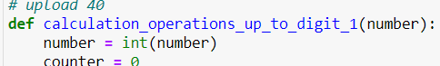

היי אשמח לדעת אם זה נהוג מה שאני עושה בתחילת הפונקציה עם המשתנה number. אני מוצא את עצמי פותר ככה לא מעט תרגילים. האם יש דרך נכונה יותר?

אם פונקציה אמורה לעבוד על מספר, אין שום סיבה לא לקבל את הארגומנט כשהוא כבר מספר - ולבצע את ההמרה הזו בעת הקריאה לפונקציה.
להבנתי כן יש סיבה. כמכניסים לי פלט שאני לא שולט בו אני לא יכול לדעת מאיזה סוג הוא יהיה. אני יכול לכפות על המשתמש, אבל עוד לא למדנו איך. אז חיפשתי דרך לוודא זאת.
אהבתי את הפתרון של הקאסטינג בקריאה. אשתמש בזה מעכשיו, תודה
כשמקבלים קלט מהמשתמש זה אכן יותר בעייתי, אבל באותה מידה ניתן לומר שאי אפשר להבטיח שנקבל מהמשתמש קלט שניתן להמיר למספר שלם - דבר שאני רואה שלא בדקת לפני ההמרה 
בכל מקרה ניתן להתמודד עם זה ולהבטיח שהקלט מהסוג הרצוי. אבל בהנחה שזו פונקציה שמסייעת לפונקציה אחרת, מה שקורה הרבה בתרגילים בינתיים, השליטה כן בידינו 
וסתם לידע כללי, בשפות אחרות, למשל ג’אווה ו-C, טיפוס הארגומנטים שפונקציה יכולה לקבל מוגדר מראש בעת כתיבת הפונקציה
אני אישית חושב שזה תלוי במה התכנית שלך עושה.
אם אתה משתמש בו בחוץ בעוד מקומות בצורה של מחרוזת ורק בפונקציה הזו בצורה של מספר
אז אולי כן נכון להמיר את זה בפונקציה או לחילופים בקריאה לפונקציה.
אם זה משתנה שקלטת אותו בסטרינג, אבל אתה כל התוכנית משתמש בו רק בצורה של int
אולי שווה כבר לאחר הקליטה שלו להמיר אותו ואז להשתמש בו איפה שאתה צריך.
מעניין אם יש לזה פרקטיקה מקצועית, לדעתי זה תלוי תכנית אבל אני לא מהתחום וזו רק תחושה אישית ממה שעשינו עד כה.
זו שאלת העמקה טובה, וכרגיל אני מאוד שמח לקבל שאלות העמקה טובות
השאלה הזו מתקשרת להרבה תחומים במדעי המחשב, אבל אנסה לסכם בקצרה הרבה מאוד נושאים. אם תרצו הרחבה על משהו תרגישו בנוח לבקש.
מכיוון שבפייתון, כפי שציינה אורפז, הטיפוסיות (typing) לא נבדקת ע"י פייתון בשום שלב לפני שהשורה מתבצעת בפועל, יש לנו הרבה גמישות אבל ליד זה יש לנו הרבה סיכוי לצרות.
יש לנו 3 אפשרויות לגשת לבעיה כזו:
- לבדוק את הקלט מחוץ לפונקציה
- לבדוק את הקלט בתוך הפונקציה
- להתעלם מהבדיקה של הקלט
בזמן ש־1 ו־2 הם הפופולריים יותר, בכל שפה ובכל ארגון הגישה היא קצת שונה. בשפות עם טיפוסיות חלשה (כאלו שבהן השפה “מוותרת” לנו ומאפשרת לבצע פעולות כמו 1 + "1") הדבר הזה הוא מקור לכאוס והמון באגים.
ברגע שאנחנו בודקים האם הקלט נכון, יש לנו כמה אפשרויות:
- לתקן אותו אם אפשר
- להכשיל את הקריאה באופן רך (אם התוצאה של הפונקציה לא קריטית לריצת התוכנית)
- להכשיל באופן קשה ופוטנציאלית לגרום לקריסת התוכנית
כאן, כמובן, הבחירה הנכונה משתנה בין מקרה למקרה.
יש גישה תכנותית שנקראת “Defensive Programming” – סוג של גישת Fail fast בקוד – עדיף לתפוס את הכישלון כמה שיותר מוקדם ולשלוט במה שקורה, מאשר לתפוס את הכשלון שזה כבר מאוחר מדי. ב־Defensive Programming אנחנו נשים “Guard statements”, שהן בגדול פעולות שמטרתן לבדוק שהארגומנטים שהועברו לפרמטרים הם מה שאנחנו מצפים שהם יהיו וימנעו כישלון של הקוד בהמשך.
הגישה הנפוצה (והנכונה להערכתי) היא כן לשים את ה־Guard statements בתוך הפונקציה, כדי למנוע חזרה ופיזור שלהם בהרבה מקומות בקוד.
לקריאה נוספת: תכנות לפי חוזה, תכנון מתגונן (אנ’), טיפוסיות ברווז.
2 לייקים
תוספת למי שירצה להעמיק, על “עיקרון האיתנות”.
השאלה, אם אני מזקק אותה (ומקווה שהבנתי כראוי), היא אם יש צורך לוודא או לטפל בקלט שמקבלת פונקציה שאנחנו בונים.
עיקרון האיתנות אומר:
היה שמרן במה שאתה שולח וליברל במה שאתה מקבל.
אם נשאיל רגע לעולם כתיבת הפונקציות:
- נסה להניח על הפרמטרים שאתה מקבל כמה שפחות.
- החזר תמיד תשובה חד משמעית, באופן שהמשתמש בפונקציה יידע בוודאות מה יוחזר כל פעם.
בפייתון זה כמובן מיתרגם לבדיקות סוג וניסיון “להציל” את הקלט אם אנחנו מזהים שאפשר. זה אומר:
- בדיקות סוג הקלט והמרות כשצריך.
- התחשבות במקרים של קלט שכלל לא מתאים למקרה שלנו, ואולי זריקת שגיאות (עדיין לא למדנו בשבוע 3 – אבל לומדים בהמשך).
- החזרה של אותו סוג משתנה מהפונקציה, עד כמה שאפשר. כלומר, לא להחזיר בוליאני או מחרוזת או מספר: או שהפונקציה מחזירה מחרוזת, או שהיא מחזירה מספר, או שמחזירה בוליאני.
**
תת־הרחבה מעניינת היא הביקורת על הרעיון הזה.
להיות ליברל מדי בקלט עלול לכבול אותך בעתיד, כשיעלה הצורך להפסיק לתמוך בדברים.
הנה דוגמה מעט טפשית, שאני מקווה שתעביר את הוייב:
נניח שאתה מתכנת תוכנת מיילים.
החלטת להיות ליברל, ואתה תומך באנשים שטעו והזינו את כתובת המייל בעברית (במקום yam@gmail.com, הם על עברית במקלדת ומקלידים טשצ@עצשןךץבםצ).
הארכיטקטורה של התוכנה מסתבכת, והחלטת שהוספת פיצ’רים לשורת הכתובות מתארכת משמעותית בגלל שהליברליות הזו מסבכת לך את הקוד.
אבל עכשיו כבר מאוחר מדי להוריד אותו – אנשים כבר רגילים להקליד כתובות מייל באנגלית־עברית, ואולי אפילו מישהו הכניס לאיזה תקן שתוכנות מיילים צריכות לתמוך בטעות שכזו.
זו כמובן דוגמה מופשטת מאוד, אבל הביקורת קיימת ומייחסת לעיקרון יתרונות בעיקר לטווח הקצר ותוצאה שלילית לאורך זמן.
**
כסיפא אתן את ה־2 סנט שלי, והוא:
- להתאים את עצמך לפרויקט שבו אתה נמצא.
- בפרויקט שהוא שלך – להחליט על הדרך שמתאימה לך אחרי שהתייעצת עם אנשים בעלי ניסיון.
- בכל מקרה: לכתוב טסטים מקיפים (נלמד בשבועות הבאים) שיבדקו שהכל עובד כמצופה.
(כהערת צד: מצטער על הקפצת האשכול, יודע שעברה שנה. אני עובר ומוסיף תגיות לאשכולות בפורומים כדי שיהיה קל יותר למצוא דברים, ועל הדרך אני מרחיב שאלות מעניינות).
2 לייקים